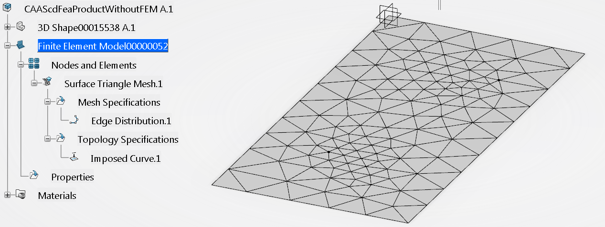

-
Retrieves the simulation and its product
As a first step, the UC retrieves the simulation and its product from the simulation editor
...
myEditor = CATIA.ActiveEditor
myProdService = myEditor.GetService("PLMProductService")
myEntities = myProdService.EditedContent
myEntity = myEntities.Item(1)
MySimulationRoot = myEntity
myModel = MySimulationRoot.Model
...
-
Retrieves the PartBody
In this step UC retrieves the main body of the 3D shape aggregated by the simulation's Model.
...
myModelRepInstances = myModel.RepInstances
for myPartRepInstance in myModelRepInstances:
myPartInstanceRef = myPartRepInstance.ReferenceInstanceOf
attr = myPartInstanceRef.GetAttributeValue("V_discipline")
if attr == "Design":
myPart = myPartInstanceRef.GetItem("Part")
myPartInstance = myPartRepInstance
myBody = myPart.MainBody
...
-
Creates the FEM representation, Retrieves its root object and Associates the PartBody to this
In this step UC creates a new FEM representation object.
To
perform the creation, a simulation representation factory has to be
retrieved on the reference object which will aggregate the FEM
representation.
...
MyPrdRepFactory = myModel.GetItem("SimPrdRepFactory")
MyFemRepRef = MyPrdRepFactory.CreatePrdRep("FEM")
MyFemRepRoot = MyFemRepRef.GetItem("SimFemRoot")
...
Now UC appends the main body previously retrieved to the associated shapes of
the FEM representation.
First, the UC opens the model and retrieves the product editor and the root occurence
...
oOpenService = CATIA.GetSessionService("PLMOpenService")
oOpenService.PLMOpen (myModel)
myProductEditor = CATIA.ActiveEditor
myRootOcc = myProductEditor.ActiveObject
Now it creates the link to associate with the FEM
MyReference = myPart.CreateReferenceFromObject(myBody)
myProductService = myProductEditor.GetService("PLMProductService")
MyLink = myProdService.ComposeLink(myRootOcc,myPartInstance,MyReference)
MyFemRepRoot.AddAssociatedRep (MyLink)
...
-
Retrieves the mesh set
In this step UC retrieves the mesh set and the collection object
of all the mesh parts.
...
myMeshSet = MyFemRepRoot.GetSet("SimNodesElements")
myMeshParts = myMeshSet.MeshParts
...
-
Creates a mesh part
In this step UC creates a surfacic triangle mesh part. The kind
of mesher depends of the late type which it's given as argument.
...
myMeshPart = myMeshParts.Add("CATFmtSurfTriaMesher")
...
Then, you should set the mesh part support. A link to the support object must be created first.
...
MyPartSupp = myPart.FindObjectByName("Fill.1")
MyReference = myPart.CreateReferenceFromObject(MyPartSupp)
MyLink = myProductService.ComposeLink(myRootOcc, myPartInstance, MyReference)
myMeshPart.AddSupport (MyLink)
...
Finally, the mesh part attributes can be valuated.
...
myMeshPart.SetAttributeValue("Mesh", "MeshSizeValue", "20 mm")
myMeshPart.SetAttributeValue("Mesh", "ElementOrder", 2)
myMeshPart.SetAttributeValue("Mesh", "AbsoluteSag", 2)
myMeshPart.SetAttributeValue("Mesh", "AbsoluteSagValue", "2 mm")
...
For further informations about the mesher late type and their attributes, please refer to the "Mesh Parts and Their Attributes" article. [1]
-
Creates a local topology specification
In this step UC creates a local topology specification which will
be used as support of a mesh specification. As the mesh part
creation, the topology specification contains three steps : feature
creation, support definition and attributes valuation.
...
MyTopologySpecifications = myMeshPart.GetTopologySpecifications()
MyTopologySpecification = MyTopologySpecifications.Add("CATFmtExternalCurveLocalSpec")
MySpecSupp = myPart.FindObjectByName("MyLine")
MyReference = myPart.CreateReferenceFromObject(MySpecSupp)
MyLink = myProductService.ComposeLink(myRootOcc, myPartInstance, MyReference)
MyLinkAccess = MyTopologySpecification.GetItem("SimLinkAccess")
MyLinkAccess.AddLink("ConnectorList", MyLink)
MyTopologySpecification.SetAttributeValue("ToleranceValue", "1 mm")
For further informations about the topology specification late type and
their attributes, please refer to the "Mesh Parts and Their Attributes"
article. [1]
-
Creates a local mesh specification
In a manner similar to the one shown above, UC creates a local mesh specification.
...
MyMeshSpecifications = myMeshPart.GetMeshSpecifications()
MyMeshSpecification = MyMeshSpecifications.Add("CATFmtStudioDistributionSpec")
MyLinkAccess = MyMeshSpecification.GetItem("SimLinkAccess")
MyLinkAccess.AddLink("ConnectorList", MyTopologySpecification)
MyMeshSpecification.SetAttributeValue("Type", 3)
MyMeshSpecification.SetAttributeValue("NbElementsValue", 10)
MyMeshSpecification.SetAttributeValue("Symmetry", 2)
MyMeshSpecification.SetAttributeValue("RatioValue", 3)
...
For further informations about the mesh specification late type and
their attributes, please refer to the "Mesh Parts and Their Attributes"
article. [1]
-
Generates the mesh
In this step UC generates the mesh by the update process.
...
myMeshPart.Update
...
Fig.1: Generated Mesh
|
 |